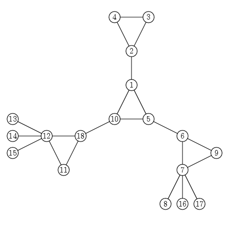

Single Round Match 419 Round 1 - Division II, Level Three
A vertex cactus is a connected undirected graph such that each vertex belongs to at most one simple cycle. A simple cycle is a cycle that doesn't pass through any vertex more than once. For example, the graph pictured below is a vertex cactus:

You are given an int n, the number of vertices in a graph G. The vertices are numbered from 1 to n. The edges in G are given in the String[] edges. Concatenate the elements of edges to get a comma-separated list of integer pairs. The integers in each pair are separated by a space. The pair "i j" (quotes for clarity) means that there is an edge between vertices i and j. Return the number of connected components of G that are vertex cacti.
CactusCountcountCactiint, String[]intint countCacti(int n, String[] edges)
["1 2,1 3,2 3"]
One cycle is a vertex cactus.
[]
Here each vertex is a component by itself. A graph with one vertex is a vertex cactus.
["1 2,3 4,4 5"]
Both components are trees. A tree is a vertex cactus.
["1 2,2 3,3 4,4 5,5 3,1 3,6 7,7 8,6 8,8 9,9 1",
"0,10 11,11 9,12 13,14 15,15 16,16 17,14 17,14 16"]
Here are two cacti and two non-cacti. The component with vertices 1, 2, 3, 4 and 5 is not a vertex cactus because vertex 3 belongs to two cycles: 1-2-3 and 3-4-5. The component with vertices 14, 15, 16 and 17 is not a vertex cactus either. Vertex 14, for example, belongs to more than one cycle.